- 
-
Opinion Economy
YUP Token
Our native cryptocurrency that inflates in supply to reward good opinions with new tokens. Demand for the token stabilizes price and makes it redeemable for money.
Influence Metric
Text Text Text.
Our native cryptocurrency that inflates in supply to reward good opinions with new tokens. Demand for the token stabilizes price and makes it redeemable for money.
Text Text Text.
You upvote/downvote anything on the web (cat photos, hipster cafes, viral videos, politically incorrect tweets, and even other users). If others vote like you on the same things, you'll earn YUP tokens, which you can redeem for money or hold to grow your Influence. More YUP means more Influence, increasing your vote's value and future rewards. Learn More
Yup runs on top of the Yup Protocol, a blockchain-based system that no one owns. It mints new YUP tokens daily, measures the Influence of voters, and then distributes new YUP to content that gets voted on.
Our native cryptocurrency that inflates in supply to reward good opinions with new tokens. Demand for the token stabilizes price and makes it redeemable for money.
The metric that determines the value of votes, based on users' YUP over time, their past opinions, and other's opinions of them.